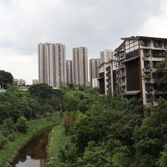
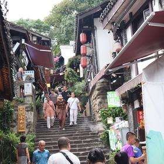
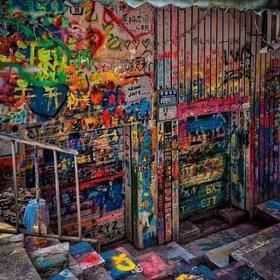
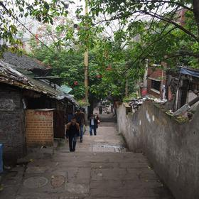
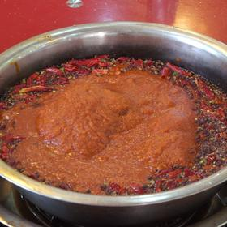

08:00🏨 อาหารเช้า1 ชม.
ร้านเสี่ยวเมี่ยนแถวที่พัก หรือร้านติ่มซำในห้าง
🚶 เดินไปสถานีรถไฟฟ้า·0.4 กม.·7 น.
09:10🚆 รถไฟฟ้าสาย 1 ไปฉือชี่โข่ว35 น.
ขึ้นที่ Jiaochangkou หรือ Xiaoshizi ลง สถานี Ciqikou ทางออก 1 ค่าโดยสาร ¥4–6
🚇 รถไฟฟ้าสาย 1 ลงทางออก 1·11 กม.·35 น.

09:50🏔️ เมืองโบราณฉือชี่โข่ว2 ชม. 30 น.
เมืองท่าเก่าริมแม่น้ำเจียหลิง ถนนหินและบ้านไม้ยุคหมิง-ชิง เข้าฟรี เปิดตลอด · บ้านตระกูลจง 钟家院 เข้าชมได้ ¥15 · วัดเป่าหลุนฟรี · เดินสะพานลอยฟีนิกซ์ชมวิวแม่น้ำ · ของกินขึ้นชื่อคือเต้าหู้เหม็นทอดกับขนมม้วนน้ำตาล
📸 จุดถ่ายรูป: ตรอกหินแคบ ๆ ที่มีโคมแดงแขวนทั้งสองฝั่ง
🚶 เดินในเมืองโบราณ·0.3 กม.·5 น.

12:30🍽️ กลางวันในฉือชี่โข่ว1 ชม.
ร้านริมถนนหิน ลองซวนล่าเฝิ่น (วุ้นเส้นเปรี้ยวเผ็ด) หรือข้าวหน้าหมูสับ
🚇 รถไฟฟ้า เปลี่ยน 1 ต่อ·9 กม.·45 น.
13:45🚆 รถไฟฟ้าข้ามไปหวงเจวี๋ยผิง45 น.
ข้ามแม่น้ำไปเขต Jiulongpo ฝั่งตะวันตก ต้องเปลี่ยนสาย 1 ครั้ง
🚶 เดินจากสถานี·0.4 กม.·7 น.

14:45🏔️ ถนนกราฟฟิตี้หวงเจวี๋ยผิง2 ชม.
ตึกทั้งแถบยาวกว่า 1 กิโลเมตรถูกพ่นสีเต็มผนังทุกหลัง เป็นงานของนักศึกษาสถาบันศิลปะเสฉวนที่อยู่ติดกัน เข้าฟรี เดินได้ตลอดเวลา · เป็นย่านที่คนท้องถิ่นอยู่จริง ไม่ใช่จุดท่องเที่ยวจัดฉาก
📸 จุดถ่ายรูป: ผนังกราฟฟิตี้ที่ยาวต่อเนื่องเกิน 1 กิโลเมตร ถ่ายจากกลางถนนให้เห็นความยาว
🚇 รถไฟฟ้ากลับคาบสมุทร·8 กม.·45 น.
17:00🚆 รถไฟฟ้ากลับ Jiaochangkou45 น.
กลับเข้าคาบสมุทร Yuzhong
🚶 เดินจากสถานี Jiaochangkou·0.3 กม.·5 น.

18:00🏔️ ซือปาที Shibati บันได 18 ขั้น1 ชม. 15 น.
ถนนบันไดเก่าที่เชื่อมเมืองบนกับเมืองล่าง เพิ่งบูรณะใหม่ เข้าฟรี ตอนค่ำไฟโคมเปิดสวยกว่ากลางวัน · เดินจากสถานี Jiaochangkou ถึงเลย
📸 จุดถ่ายรูป: บันไดซือปาทีตอนไฟโคมติด มองขึ้นไปทางกวนอินหยาน
🚶 เดินขึ้นไปย่านเจี่ยฟ่างเปย·0.7 กม.·12 น.

19:30🍽️ มื้อเย็น — เป็ดพะโล้กับเสียวเชา1 ชม. 30 น.
ลองโจวเฮยยา (เป็ดพะโล้รสหมาล่า) หรือร้านปิ้งย่างริมถนนแบบคนฉงชิ่งกินจริง